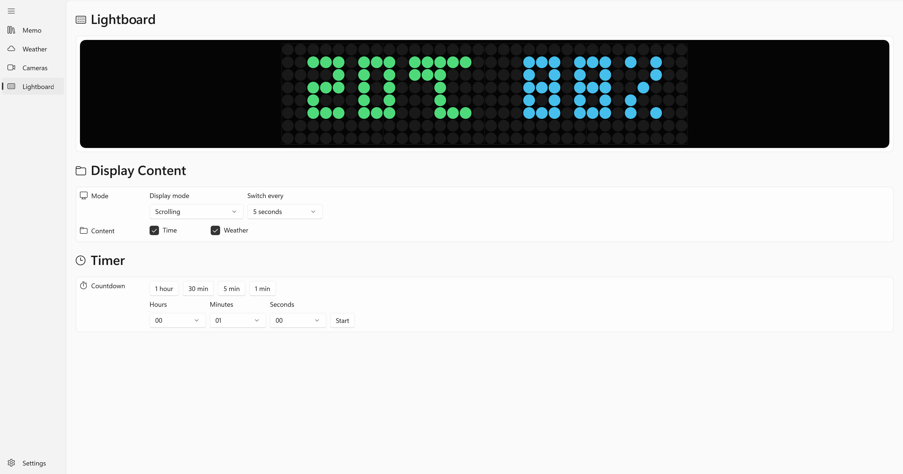
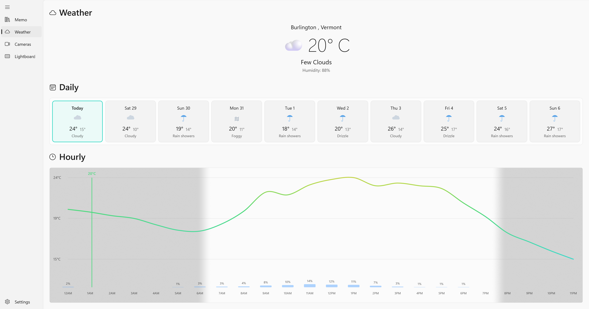
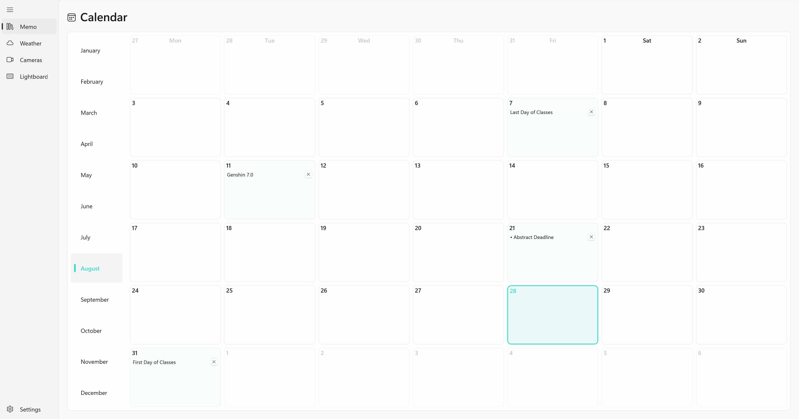
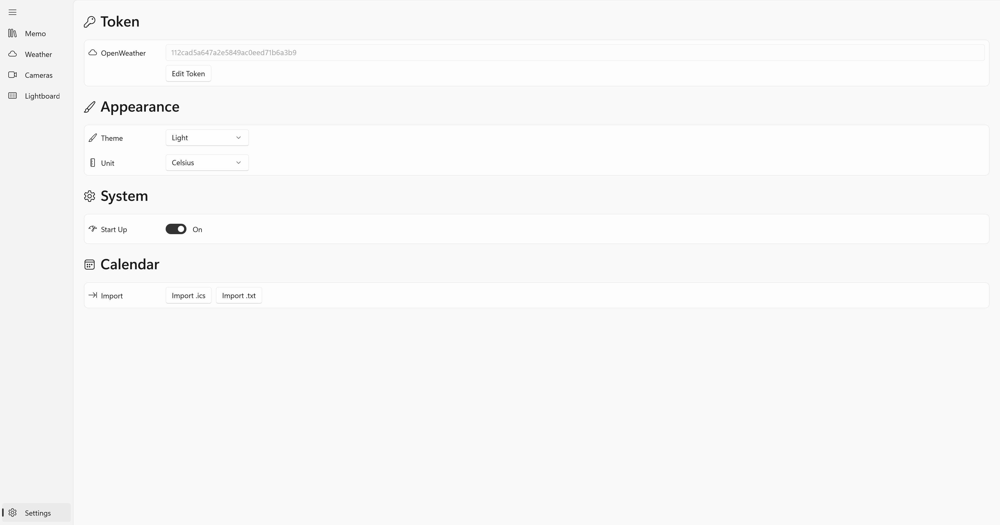

2017
FIELD
Workshop Intern
Hyundai Motor Company
- Inspection
- Maintenance
ABOUT ME / 01
PROFILE

EXPERIENCE / 02
Hyundai Motor Company
CIMC Raffles Offshore
University of Vermont
University of Vermont
EDUCATION / 03
Mechanical Engineering · University of Vermont
Mechanical Engineering · University of Vermont
Mechanical Engineering · Hanyang University
TECHNICAL SKILLS / 04
PUBLICATIONS / 05
A Fath, C Sauter, Y Liu, B Gamble, D Burns, E Trombley, SKR Sathi, T Xia, et al.
Micromachines 16 (4), 460Y Liu, PS Shah, T Xia, D Huston
Computers 14 (4), 147Y Liu, PS Shah, T Xia, D Huston
Computers 15 (1), 4A Fath, Y Liu, B Gamble, T Xia, D Huston
Structural Health Monitoring 2025A Fath, N Hanna, Y Liu, S Tanch, T Xia, D Huston
Future Internet 16 (5), 170A Fath, Y Liu, T Xia, D Huston
Micromachines 15 (2), 202A Fath, Y Liu, S Tanch, N Hanna, T Xia, D Huston
Destec Publications, Inc.A Fath, N Hanna, Y Liu, S Tanch, T Xia, D Huston
ASCE Engineering Mechanics Institute 2023 Conference, 495Y Liu
RESEARCH / 00
A six-node computing stack that predicts heat and adapts workloads before performance degrades.
A cooperative MARSBot system for localization, crack detection, and augmented-reality field control.
A mobile probing platform that maps underground pipe geometry from position-tagged sound measurements.
THERMAL INTELLIGENCE / 01
PACKAGE STACK
MIXTURE OF EXPERTS
THERMAL SCHEDULING
ROBOTIC INFRASTRUCTURE MONITORING / 02
MOBILE ROBOT
CRACK INSPECTION
AR INTERFACE
ACOUSTIC IMAGING / 03
PROBING PLATFORM
FIXED-INTERVAL SCAN
3D RECONSTRUCTION
WORKBENCH / 00
Shape an idea, resolve its details, and prepare it to exist beyond the screen.
Turn digital geometry into physical prototypes through making, testing, and iteration.
Connect sensors, controllers, and everyday objects into responsive systems.
LOCALLINK / 01
SYSTEM
CONTROL APP




AMBIENT DISPLAY
LIVE CALENDAR
| Mon | Tue | Wed | Thr | Fri | Sat | Sun |
|---|
MODEL MAKING / 02
AKM / INTERACTIVE ASSEMBLY
MUSIC / NOTES
REWORKS / STEM MIXER
LIFE / 2021
LIFE / 2023